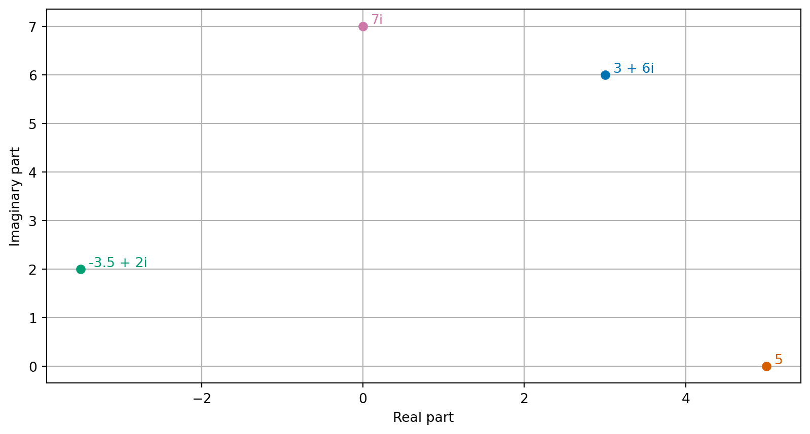
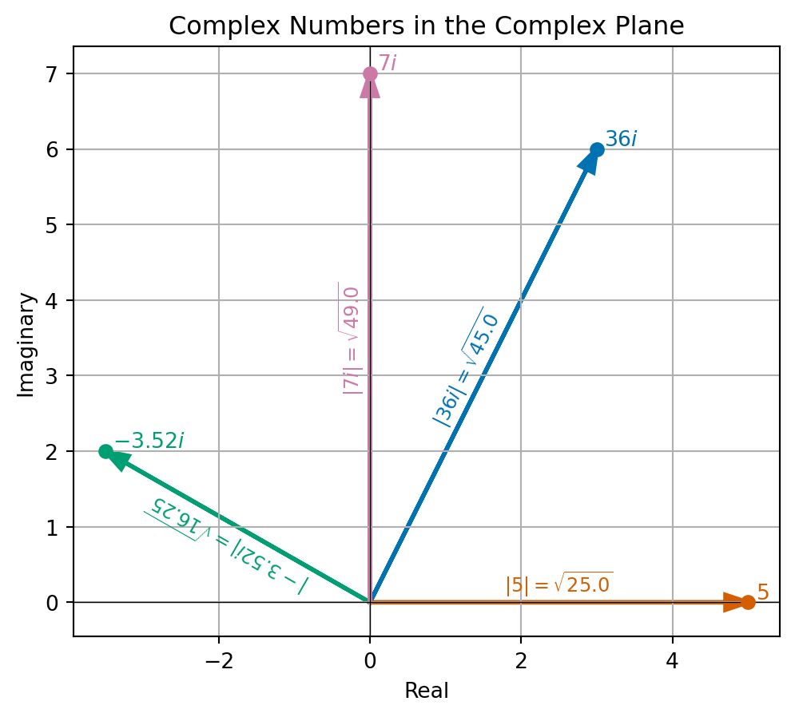

Today: Definition of eigenvalues and eigenvectors and complex numbers
Online notes: 7.1, 7.2, 6.1, 6.2, 6.3, 6.5
What is an eigenvector?
Let \(A\) be an \(n \times n\) matrix. We are interested in when is the output vector \(A \vec{x}\) is parallel to \(\vec{x}\)?
Definitions
Definition 1 We say that any vector \(\vec{x} \neq \vec{0}\), where \(A \vec{x}\) is parallel is \(\vec{x}\), is called an eigenvector of \(A\). Here by parallel, we mean that there exists a number \(\lambda\) (can be positive, negative or zero) such that \[\begin{equation}
\label{eq:evalues}
A \vec{x} = \lambda \vec{x}.
\end{equation}\] We call the associated number \(\lambda\) an eigenvalue of \(A\).
Importance of eigenvalues
Eigenvalues can be used to understand the geometry behind linear transformations (the action of matrix-vector multiplication).
They can also be used to find a useful basis (of eigenvectors) when working with large datasets.
The idea of using eigenvectors to form a basis is a key step in the PageRank algorithm which Google used to revolutionise search algorithms.
Characteristic equation
The eigenvalues of a matrix \(A\) satisfy the characteristic equation given by \[\begin{equation}
\label{eq:char}
\det( A - \lambda I_n ) = 0.
\end{equation}\]
Example 1
Find the eigenvalues and eigenvectors of the matrix \[\begin{equation*}
A = \begin{pmatrix}
3 & 1 \\ 1 & 3 \\
\end{pmatrix}.
\end{equation*}\]
Example 2
Let \(B\) be the \(2 \times 2\) matrix given by \[\begin{equation*}
B = \begin{pmatrix}
3 & 1 \\ 0 & 3
\end{pmatrix}.
\end{equation*}\] Find the eigenvalues and eigenvectors of \(B\).
Exercise
Find the eigenvalues and eigenvectors of the matrix \[
\begin{pmatrix} 9 & -2 \\ -2 & 6 \end{pmatrix}.
\]
Example 3
Let \(Q\) denote the \(2 \times 2\) matrix that rotates any vector by \(\pi/2\) (\(=90^\circ\)): \[\begin{equation*}
Q = \begin{pmatrix}
0 & -1 \\ 1 & 0
\end{pmatrix}.
\end{equation*}\] Find the eigenvalues and eigenvectors of \(Q\).
The key idea of complex numbers is to create a new symbol, which we will call \(i\), or the imaginary unit which satisfies: \[\begin{equation*}
i^2 = -1 \qquad \sqrt{-1} = i.
\end{equation*}\] By taking multiples of this imaginary unit, we can create many more new numbers, like \(3i, \sqrt{5} i\) or \(-12 i\). These are examples of imaginary numbers.
Definitions ii
We form complex numbers by adding real and imaginary numbers whilst keeping each part separate – for example, \(2 + 3i\), \(\frac{1}{2} + \sqrt{5} i\) or \(12 -
12i\).
Definition 2 Any number that can be written as \(z = a + bi\) with \(a, b\) real numbers and \(i\) the imaginary unit is called complex number. In this format, we call \(a\) the real part of \(z\) and \(b\) the imaginary part of \(z\).
We notice that all real numbers \(x\) must also be complex numbers since \(x = x +
0 i\).
History
Among the first recorded uses of complex numbers in European mathematics was by an Italian mathematician, Gerolamo Cardano, in around 1545. He later described complex numbers as being “as subtle as they are useless” and “mental torment”.
The term imaginary was coined by René Descartes in 1637:
… sometimes only imaginary, that is one can imagine as many as I said in each equation, but sometimes there exist no quantity that matches that which we imagine.
Exercise
What are the real and imaginary parts of these numbers?
\(3 + 6i\)
\(-3.5 + 2i\)
\(5\)
\(7i\)
Calculations with complex numbers
Addition and subtraction are relatively straightforward: we treat the real and imaginary parts separately.
One thing to be careful of when considering products is that the identity \(i^2
= -1\) appears to break one rule of arithmetic of square roots: \[\begin{equation*}
i^2 = (\sqrt{-1})^2 = \sqrt{-1} \sqrt{-1} \neq \sqrt{(-1) \times (-1)} = \sqrt{1}
= 1.
\end{equation*}\] In fact, we have that \(\sqrt{x} \sqrt{y} = \sqrt{xy}\) only if \(x, y > 0\).
A geometric picture
The idea of adding complex numbers by considering real and imaginary parts separately is reminiscent of adding two-dimensional vectors. For this reason, it is often helpful to think of complex numbers as points in the complex plane.
Complex plane
The complex plane is the two-dimensional space formed by considering the real and imaginary parts of a complex number as two different coordinate axes.
Example 5

Complex conjugate
The complex conjugate of a complex number \(z = a + bi\) is given by \(\bar{z} =
a - bi\). The complex conjugate is that number we used before when working out how to divide complex numbers.
Example 6 Find the complex conjugate of (i) \(2 + 3i\) and (ii) \(12 - 12i\)
Exercise 2 Find the complex conjugates of (i) \(3 + 6i\) and (ii) \(-3.5 + 2i\).
Modulus
The modulus (sometimes called the absolute value) of a complex number \(z = a + bi\)\[\begin{equation}
\label{eq:modulus}
|z| = |a + bi| = \sqrt{a^2 + b^2} = \sqrt{z \bar{z}}.
\end{equation}\]
Example modulus

Exercise
Find the value of \[\begin{equation}
|3 + 6i| \quad \text{and} \quad |-3.5 + 2i|.
\end{equation}\]
Rules for modulus of complex numbers
If \(z\) and \(y\) are complex numbers, then \(|zy| = |z| |y|\).
In particular if \(|y| = 1\), then \(|zy| = |z|\).
So we can think of multiplying by a complex number with modulus 1, as a rotation!
Polar representation
When talking about a complex number \(z\) represented in the complex plane, we know that the modulus \(|z|\) represents the radius. We can form an angle \(\theta\) to represent the angle of a complex number that we know call the argument.
It can be found by computing arctan2 (a quadrant aware version of arctan) of the real and imaginary parts of \(z\).
print("angle of 1 + 0i:", np.arctan2(1, 0))print("angle of 0 + 1i:", np.arctan2(0, 1))
angle of 1 + 0i: 1.5707963267948966
angle of 0 + 1i: 0.0
Picture
Polar form
Let \(z\) be a complex number. The polar form of \(z\) is \(R (\cos \theta + i
\sin \theta)\). We call \(R\) the modulus of \(z\) and \(\theta\) is the argument of \(z\).
The representation of the angle unique up to adding integer multiples of \(2
\pi\), since rotating a point by \(2 \pi\) about the origin leaves it unchanged.
Example
Find the polar form of \(z = 12 - 12i\).
Exercise
Compute the modulus and argument of \(2\), \(3i\) and \(4 + 4i\).
Geometric view of complex multiplication
The polar representation of complex numbers then gives us a nice way to understand multiplication of complex numbers.
If \(y \neq 0\), then we can check that \(\left| \frac{y}{|y|} \right| = 1\) and \(\arg{y} = \arg{\frac{y}{|y|}}\).
Then writing \(zy = z \frac{y}{|y|} |y|\), we can use our calculations above to infer that multiplying by \(y\) corresponds to an anticlockwise rotation by \(\arg{y}\) then scaling by \(|y|\).
Euler’s formula
Euler’s formula is relates the polar form of a complex number to complex exponentials: Let \(x\) be a real number, then \[
\exp (i x) = \cos x + i \sin x.
\]
Euler’s identity
Euler’s formula is the key important step for showing Euler’s identity: \[
\exp(i \pi) = -1.
\] This is shown by applying Euler’s formula at \(x= \pi\). This is a formula which many mathematicians a surprising and beautiful result!
Solving polynomial equations
Theorem 1 (The Fundamental Theorem of Algebra) For any complex numbers \(a_0, \ldots, a_n\) not all zero, there is at least one complex number \(z\) which satisfies: \[\begin{equation*}
a_n z^n + \cdots + a_1 z + a_0 = 0
\end{equation*}\]
In general, to find complex roots of other quadratic equations, we can apply the quadratic formula:
Example 7 Find the values of \(z\) which satisfy \(z^2 - 2z + 2 = 0\)
Existence of eigenvalues
Theorem 2 Any square \(n \times n\) matrix has \(n\) complex eigenvalues (possibly not distinct).
Proof. For any matrix the characteristic equation \(\eqref{eq:char}\) is a degree \(n\) polynomial. The Fundamental Theorem of Algebra (Theorem 1) tells us that any degree \(n\) polynomial has \(n\) roots over the complex numbers. The \(n\) roots of the characteristic equation are the \(n\) eigenvalues.
Summary
We have given a formula for computing eigenvalues of matrices and a definition of eigenvectors.
We have introduced complex numbers so that we can solve the characteristic equation.
The power of the characteristic equation is limited since we have no general formula for solving higher order polynomials.